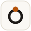

Electron 目前没有设置图标（显示的是 Electron 默认图标）。这是 5 个候选，都按「16×16 还能认出来」设计，配色取自 Porcelain 主题。
文件在 ui-demos/icons/，都是 SVG；选定后我会把它接进 BrowserWindow({ icon })，并生成 Windows 需要的 PNG / ICO。
ui-demos/icons/
BrowserWindow({ icon })
纸底 + 黑色几何 m + 琥珀句点，直接来自侧栏的 mojo. 字样。最贴合现有品牌，最安静。
mojo.
识别点：两个拱 + 右下角那个橙点。
墨底 + 琥珀大方括号 + 中间一个小圆点，像「代码容器里跑着一个东西」。深底在浅色任务栏上最跳。
识别点：一对括号 + 中心白点，16px 下退化成两个竖条 + 一点。
整块琥珀底 + 白色几何 M。对比度最高、最「像个应用」，在深色任务栏和浅色任务栏上都稳。
识别点：实心暖色方块本身就是视觉锚，16px 下仍然清楚。
墨底 + 琥珀提示符 + 白色下划线。最直白地说明「这是个跑在终端里的编程智能体」，和 mojo 的气质一致。
识别点：左边一个尖括号、右下一道短横，图形语言最独特。

纸底 + 墨色圆环 + 顶部一个琥珀卫星点，指代「上下文 → 模型 → 工具」的循环。最抽象、最不像字母。
识别点：一个环 + 顶部一点，16px 下像一枚印章。